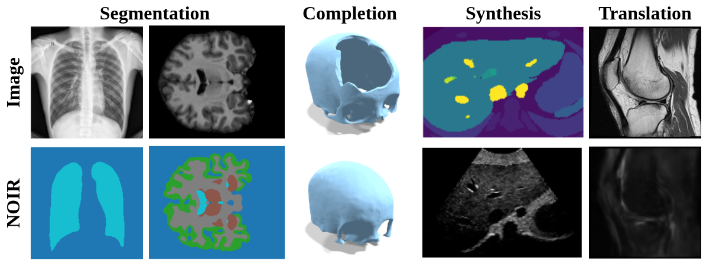
NOIR reframes core medical imaging tasks as operator learning between continuous function spaces, challenging the paradigm of discrete grid-based deep learning. Instead of operating on fixed pixel or voxel grids, NOIR embeds medical signals into shared Implicit Neural Representations (INRs) and learns a Neural Operator (NO) that maps between their latent modulations, enabling resolution-independent function-to-function transformations. We evaluate NOIR on segmentation, shape completion, image-to-image translation, and image synthesis across several public datasets (Shenzhen, OASIS-4, SkullBreak, fastMRI) and an in-house clinical dataset, in both 2D and 3D.
Neural Operator Mapping for Implicit Representations
NOIR formulates each downstream task as an operator learning problem between continuous function spaces. Both input and output signals are embedded into shared INRs via meta-learning, producing compact latent codes. A Neural Operator then maps between these codes, decoupling the prediction from the input discretization.
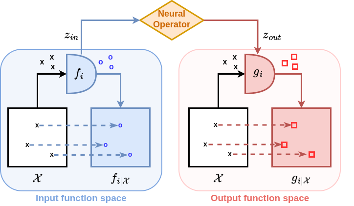
Challenges grid-based deep learning by questioning the fundamental choice of image representation.
Formulates downstream tasks as Neural Operator learning between INR latent spaces.
Applies to segmentation, shape completion, synthesis, and translation in 2D and 3D.
Empirically validates the $\varepsilon$-ReNO property: consistent predictions across various input discretizations.
Segmentation & Shape Completion
Evaluated at 10%, 25%, and 100% of native resolution against U-Net, ViT, AttU-Net, and FNO. Grid-based methods degrade sharply at low resolution; NOIR maintains stable performance across all discretizations.
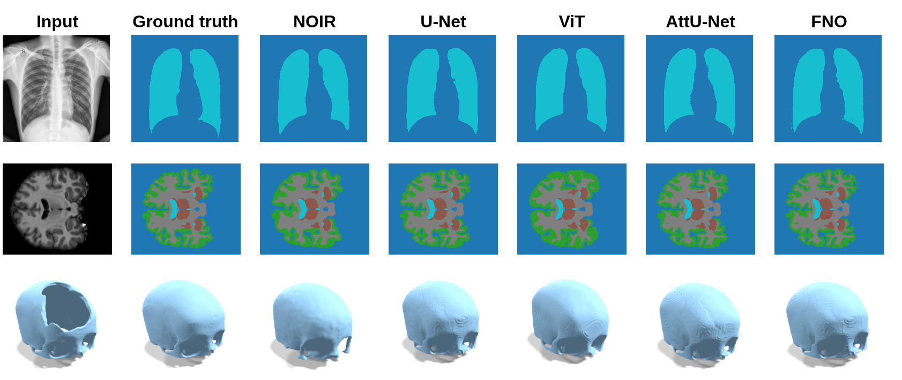
| Method | Res 10% | Res 25% | Res 100% | |||
|---|---|---|---|---|---|---|
| DSC | IoU | DSC | IoU | DSC | IoU | |
| Shenzhen — Binary Segmentation | ||||||
| U-Net | 0.75 | 0.62 | 0.92 | 0.87 | 0.95 | 0.91 |
| ViT | 0.91 | 0.84 | 0.93 | 0.87 | 0.94 | 0.90 |
| AttU-Net | 0.01 | 0.01 | 0.74 | 0.64 | 0.95 | 0.91 |
| FNO | 0.92 | 0.86 | 0.94 | 0.88 | 0.94 | 0.89 |
| NOIR (Ours) | 0.93 | 0.88 | 0.94 | 0.88 | 0.94 | 0.88 |
| OASIS-4 — Multi-label Brain MRI | ||||||
| U-Net | 0.40 | 0.29 | 0.79 | 0.66 | 0.95 | 0.90 |
| ViT | 0.66 | 0.51 | 0.85 | 0.74 | 0.90 | 0.83 |
| AttU-Net | 0.40 | 0.29 | 0.76 | 0.64 | 0.95 | 0.90 |
| FNO | 0.65 | 0.51 | 0.84 | 0.74 | 0.91 | 0.83 |
| NOIR (Ours) | 0.85 | 0.79 | 0.85 | 0.79 | 0.85 | 0.79 |
| SkullBreak — 3D Shape Completion | ||||||
| 3D U-Net | 0.71 | 0.56 | 0.90 | 0.83 | 0.96 | 0.93 |
| 3D ViT | 0.86 | 0.76 | 0.91 | 0.84 | 0.91 | 0.84 |
| 3D AttU-Net | 0.52 | 0.35 | 0.84 | 0.73 | 0.96 | 0.93 |
| FNO | 0.74 | 0.59 | 0.87 | 0.78 | 0.90 | 0.82 |
| NOIR (Ours) | 0.86 | 0.73 | 0.86 | 0.75 | 0.87 | 0.75 |
Image Synthesis & Translation
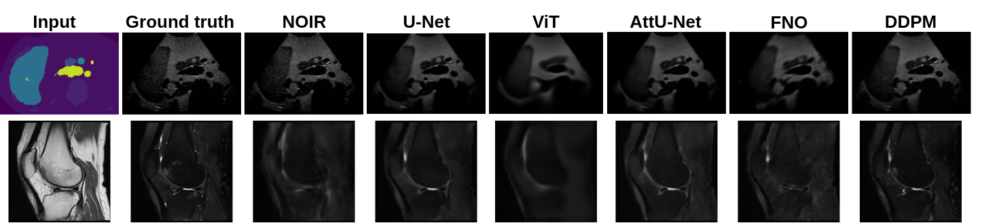
| Method | Res 25% | Res 50% | Res 100% | |||
|---|---|---|---|---|---|---|
| PSNR | SSIM | PSNR | SSIM | PSNR | SSIM | |
| Ultrasound Synthesis | ||||||
| U-Net | 17.51 | 0.84 | 17.45 | 0.84 | 17.54 | 0.89 |
| ViT | 28.22 | 0.78 | 28.31 | 0.79 | 28.36 | 0.79 |
| AttU-Net | 27.76 | 0.87 | 28.29 | 0.89 | 28.55 | 0.90 |
| FNO | 27.37 | 0.73 | 27.94 | 0.75 | 28.15 | 0.76 |
| DDPM | 26.35 | 0.65 | 26.51 | 0.65 | 26.91 | 0.64 |
| NOIR (Ours) | 30.94 | 0.86 | 30.94 | 0.86 | 31.83 | 0.87 |
| fastMRI — MRI PD → T2 | ||||||
| U-Net | 21.68 | 0.60 | 23.49 | 0.68 | 24.55 | 0.72 |
| ViT | 22.34 | 0.62 | 22.54 | 0.63 | 22.61 | 0.63 |
| AttU-Net | 21.75 | 0.60 | 23.26 | 0.67 | 24.46 | 0.72 |
| FNO | 22.61 | 0.58 | 22.74 | 0.60 | 22.82 | 0.60 |
| DDPM | 22.66 | 0.69 | 25.59 | 0.76 | 25.45 | 0.74 |
| NOIR (Ours) | 22.87 | 0.61 | 22.87 | 0.61 | 22.87 | 0.61 |
NOIR is an $\varepsilon$-ReNO
A core desideratum for neural operators in scientific computing is consistency across discretizations: the same underlying operator should be recovered regardless of how the input function is sampled. Bartolucci et al. formalise this as the Representation Equivalent Neural Operator (ReNO) framework, and we show that NOIR empirically satisfies it.
A neural operator $\mathcal{T} : \mathcal{F} \to \mathcal{G}$ is a ReNO (Bartolucci et al.) if its discrete counterpart $\mathcal{T}^d$, acting on latent coefficients rather than grid values, is consistent across discretizations. Formally, the aliasing error between the continuous operator and the discrete pipeline must vanish:
$T_\Psi^\dagger$ maps a discrete signal to its latent code; $T_\Phi$ synthesises a continuous output from predicted latents. An $\varepsilon$-ReNO bounds this error by a small $\varepsilon > 0$, guaranteeing that two discretizations of the same input yield nearly identical predictions.
How NOIR instantiates the framework
In NOIR, $T_\Psi^\dagger$ is the INR inner-loop optimization (discrete signal $\to$ $z_\text{in}$) and $T_\Phi$ is the output INR evaluated at arbitrary resolution. Because $\mathcal{T}^d$ operates solely on $z_\text{in}$, it is decoupled from the input grid.
Empirical validation
We validate this on the Shenzhen dataset across five resolutions: $32^2$, $64^2$, $128^2$, $160^2$, $200^2$. For each test sample and each resolution pair $(r_i, r_j)$ we compute pairwise MSE between latent codes, and define $\varepsilon$ as the worst-case bound over the entire test set.
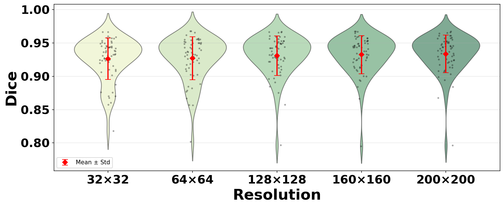
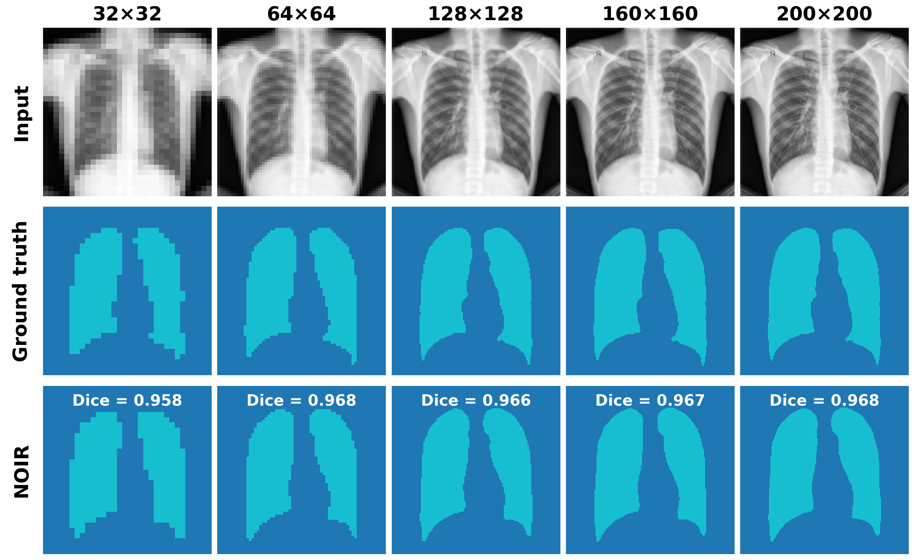
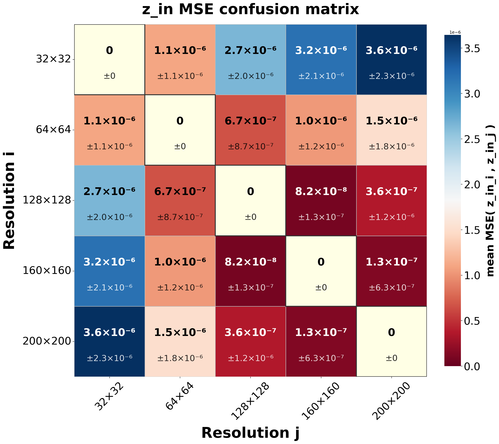
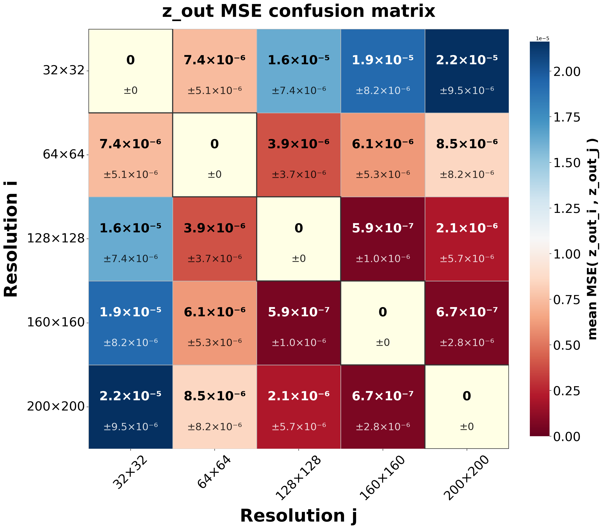
Signal Reconstruction
Output INR reconstructions vs. ground truth confirm the latent codes carry sufficient information for each task.
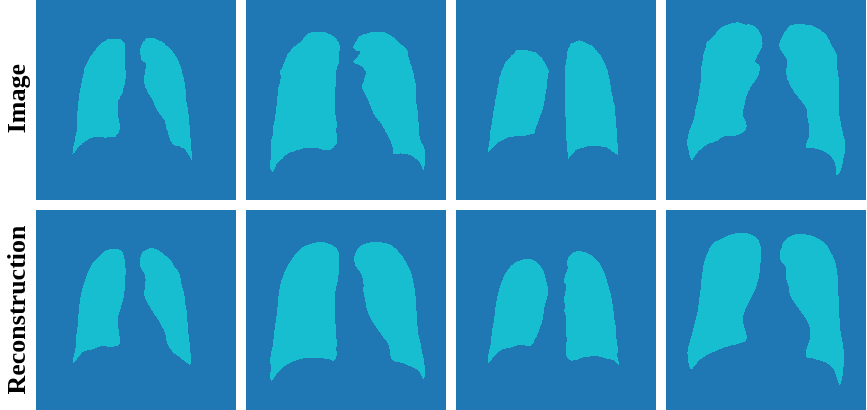
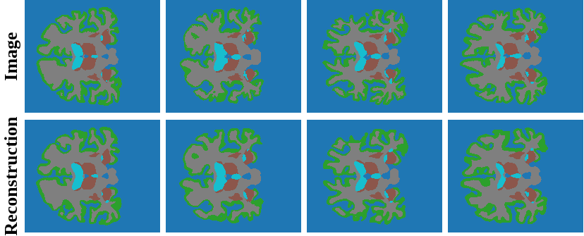
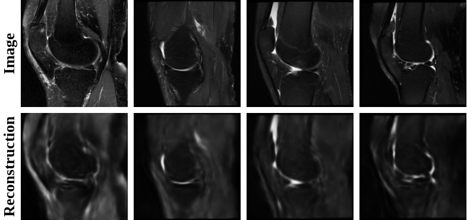
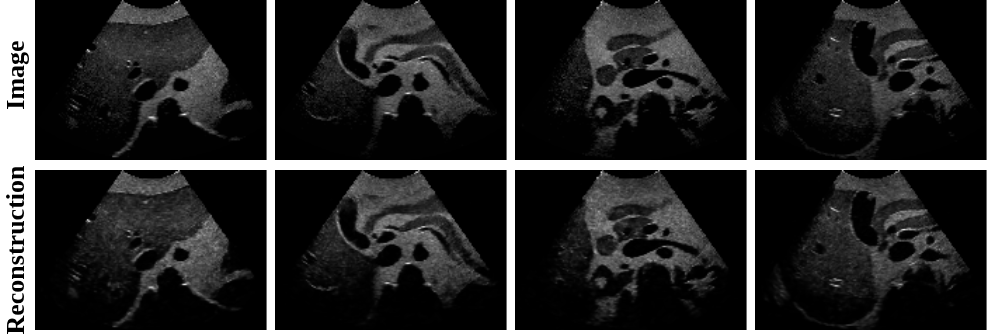
BibTeX
@inproceedings{elhadramy2026noir,
title = {NOIR: Neural Operator Mapping for Implicit Representations},
author = {El Hadramy, Sidaty and Haouchine, Nazim and
Wehrli, Michael and Cattin, Philippe C.},
booktitle = {},
year = {2026}
}